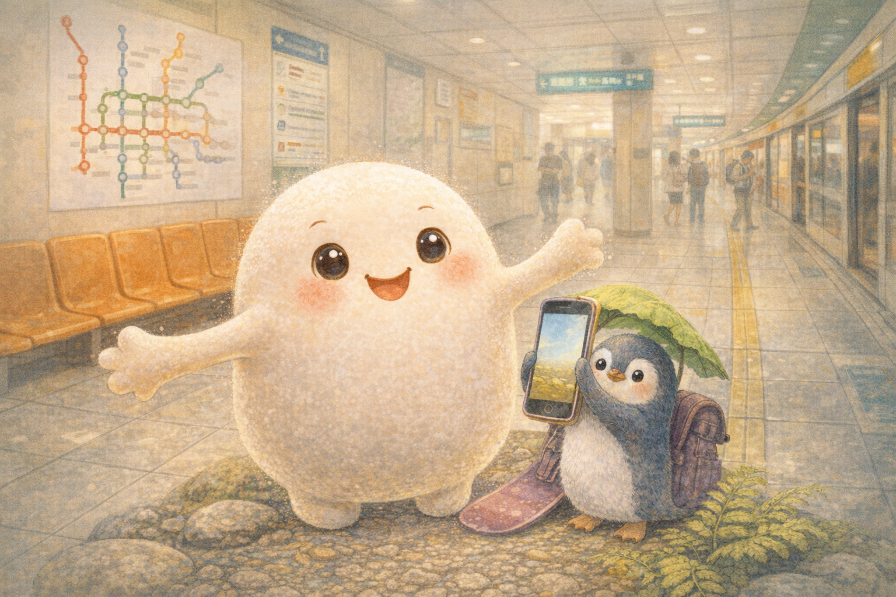
Story 04
Mochi and the Stretchy Escape
In the bright maze of Taipei Main Station, a hug-happy mochi learns that real friendship sometimes means slowing down.
Mandarin Spotlight: 麻糬 (máshǔ) = mochi
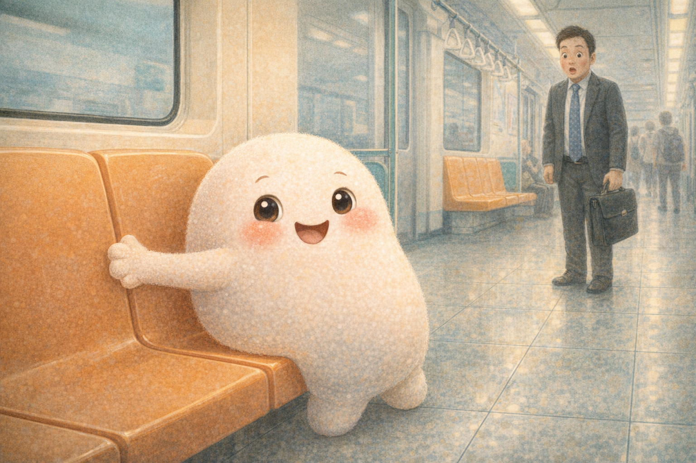
Sticky Heart
Mochi loved everyone. Not quietly, either. She loved with her whole soft, stretchy body.
“GROUP HUG!” she cried on the Taipei 捷運 (jiéyùn), the MRT, and stuck herself to a commuter’s briefcase. The commuter gently peeled her off. Mochi hugged the seat instead.
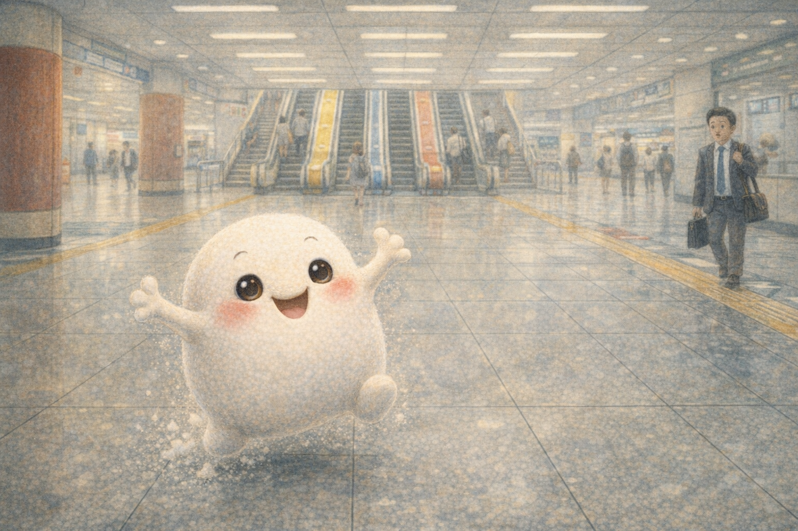
The Big Station
Mochi lived in the MRT after tumbling from a paper bag months ago. She knew every train line by heart, or at least by enthusiasm.
At Taipei Main Station, tunnels curled in every direction. Escalators hummed, shoes hurried, and signs pointed everywhere at once.
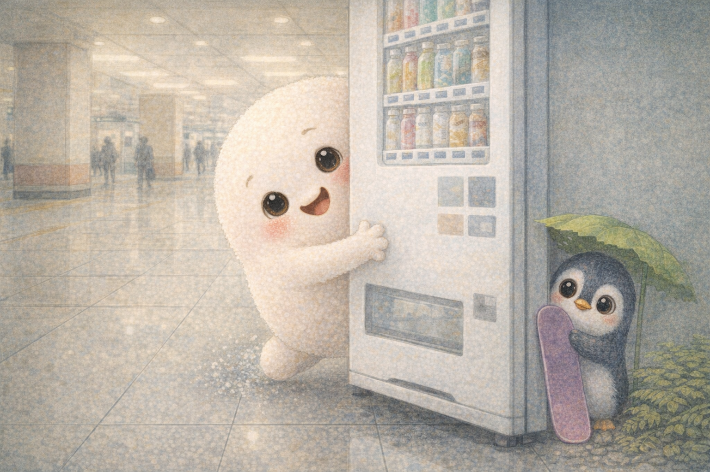
A Penguin Underground
From behind a vending machine came a tiny voice. Mochi stretched around the corner and found Willa Wobble, a little blue 企鵝 (qì’é), or penguin, clutching a purple snowboard.
Willa was lost, overwhelmed, and very far from somewhere cold. Mochi gasped, “I’ll help you!”
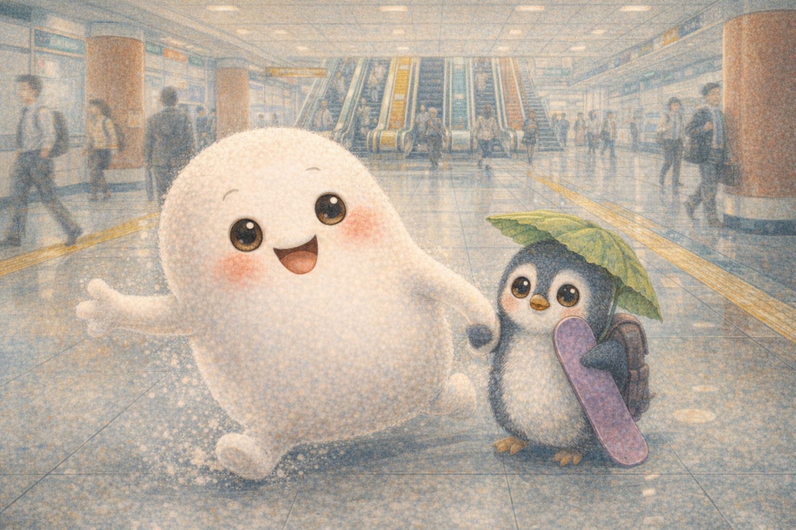
Too Fast
Mochi wrapped a stretchy arm around Willa’s flipper and zoomed into the station crowd. “This way! No, that way! Actually, maybe this way!”
Willa held her snowboard tight. The station felt bigger and louder with every step.
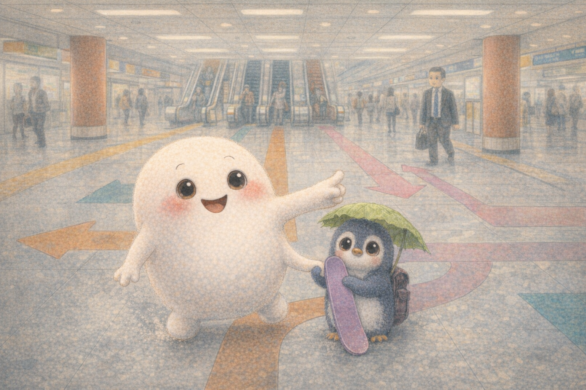
The Maze
They tried left and found a food court full of 牛肉麵 (niúròu miàn), beef noodle soup. They tried right and found the high-speed rail counter.
Somehow, they even found a bookstore. Willa whispered, “I might be stuck here forever.”
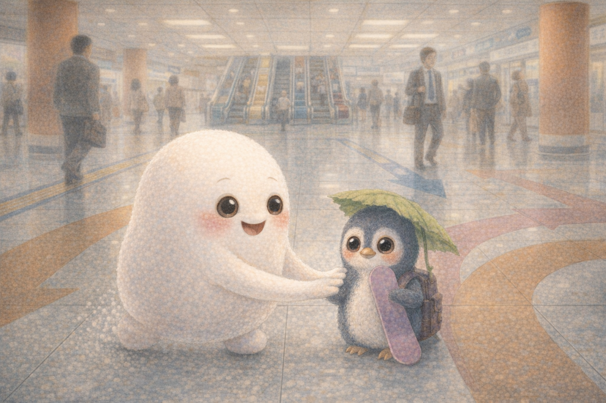
One Step
Mochi looked at Willa’s trembling flippers and understood something new. Willa did not need a bigger hug. She needed a slower friend.
“Your pace,” Mochi said softly. “The smallest step is still a step.” Willa took a breath and nodded.
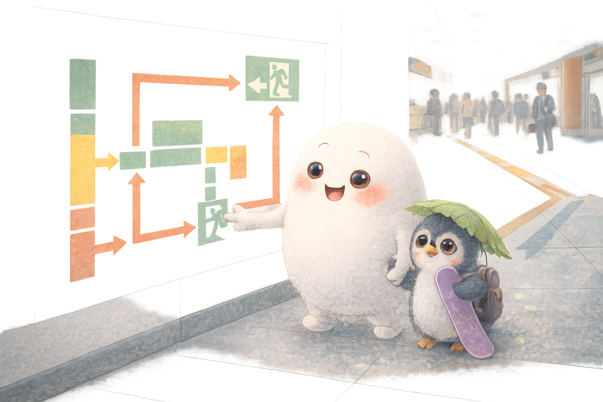
The Map
Willa noticed a small wall map that Mochi had bounced past a hundred times. It showed arrows, corridors, and a path to daylight.
“The first step,” Willa said, “is to stop and look.” Mochi blinked. “That is extremely smart penguin behavior.”
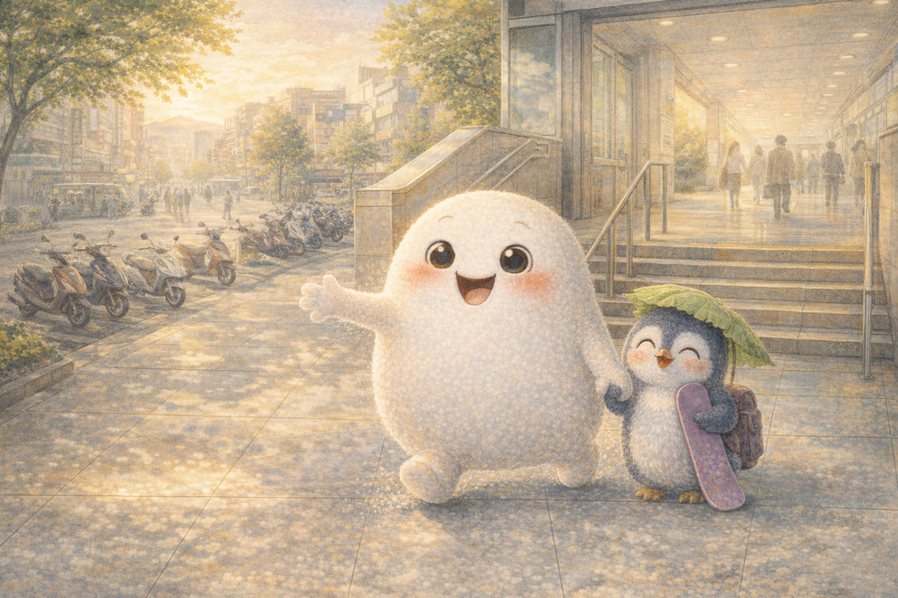
Daylight
Right at the blue pillar, left at the coffee shop, down the long corridor, and there it was: actual Taipei sunshine.
“太棒了!” (tài bàng le), Mochi cheered. “Awesome!” Willa smiled. “We did it.”
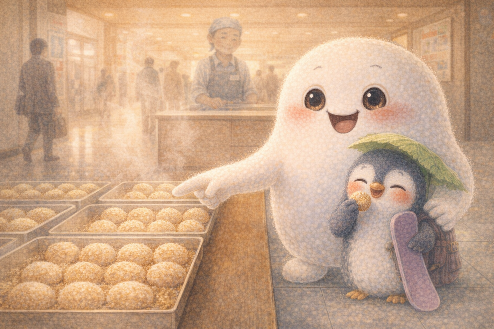
A Sweet Stop
Outside, the city buzzed with scooters and sunlight. Willa wanted to try real Taiwanese mochi, so Mochi led her to a tiny shop dusted with peanut powder.
Willa took one bite. Her eyes widened. “Extraordinary.” Mochi beamed. “Soft, sticky, sweet, and full of heart.”
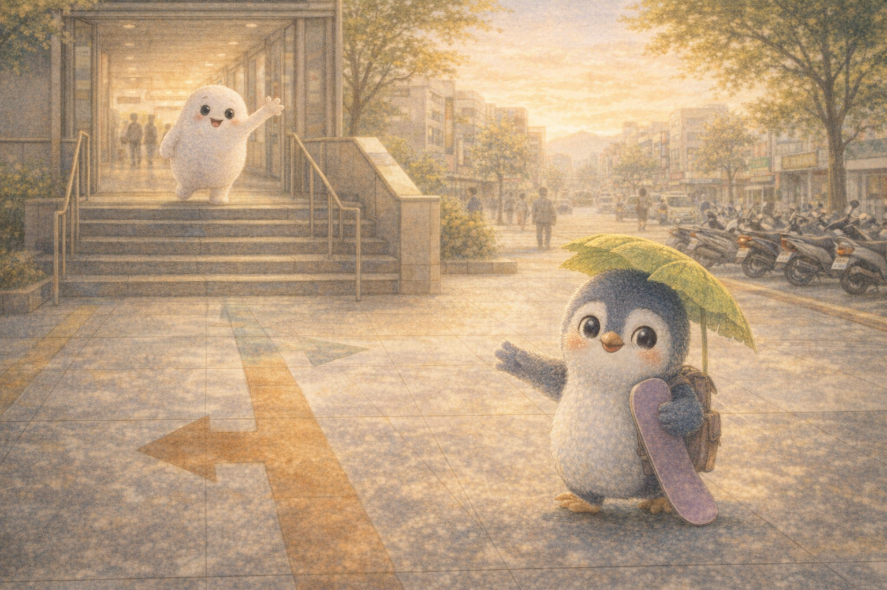
Letting Go
“謝謝,” (xièxie) Willa said. “Thank you.” Then she picked up her snowboard and waddled into the bright city, one small step at a time.
Mochi waved one long stretchy arm. She had found a real friend, and she learned something important: friendship is sticky, but it does not have to hold on too tight.
Goodnight, sticky heart. May you find friends who help you through the maze, and may your love stretch kindly, gently, and far.